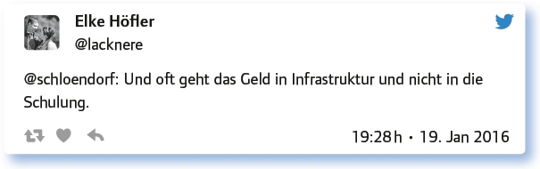
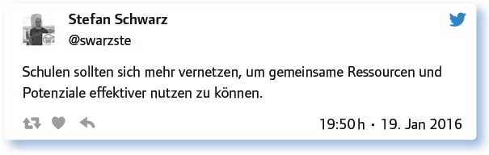

2.1
Schulentwicklung für digitale Bildung mit außerschulischen Partnern (#EDchatDE vom 19. Januar 2016)
von Monika Heusinger
Eine effektive digitale Infrastruktur sowie eine kompetente Nutzung digitaler Medien machen institutionalisierte Bildung zukunftsfähig und helfen, Ziele wie nachhaltiges, inklusives sowie individualisiertes Lernen umzusetzen. Es ist wichtig, Lernenden eine aktive, selbstbestimmte, verantwortungsbewusste Teilhabe an der digital geprägten Gesellschaft zu ermöglichen. Wie sich Bildungsinstitutionen dahingehend bereits entwickelt haben und welche weiteren Schritte noch wichtig sind, wurde im Twitterchat diskutiert.
Wie läuft Schulentwicklung für digitale Bildung an deinem System? Welche Bereiche sind betroffen, welche Gremien involviert?
Die Teilgeber nannten eine Vielfalt von Beteiligten in und außerhalb der Schule:
Über das Medien-Team und den engagierten SL, aber auch viele Impulse über die SchiLF Digitale Bildung.
Bei uns gibt’s eine eigene Einheit „Akademie für neue Medien und Wissenstransfer“.
Gremien: Schulleitung, Medienberater/Medienscouts, Steuerungsgruppe, Bereichsleiter. Jeder kann Verbesserungsvorschläge machen.
Eigene AG, Eltern, SuS, KuK; Gremien: Fachobleute, Gesamtkonferenz … Wir sind auf dem Weg.
Regelmäßige IT-Runde mit Schulleitung, Fachkonferenzen zum Thema „iPad“ und „Smartboard“; dazu regelmäßige Fobi für Kollegen.
Bin eine von vielen eLearning-Koordinatorinnen an 200 Schulen, die Schule für digitale Bildung entwickeln.
Gibt es ein Medienkonzept an deiner Schule? Welche Merkmale, Kriterien, Inhalte sind wichtig?
Hier wird die hohe Bedeutung eines Medienkonzeptes betont. Es ist auffällig, dass es teilweise schon Medienkonzepte gibt, die sogar schon wieder überarbeitet werden. Auch an Schulen ohne Medienkonzept wird eins erarbeitet. Ein Schwerpunkt liegt auf der Schülereinbindung und einer didaktischen Konzeption, die Schülern ein individuelles, kooperatives und kolloboratives Lernen ermöglicht.
Bei uns gibt es: Schuleigene iPads und BYOD, ein didaktisches Konzept, vor allem individualisierendes sowie kooperatives/kollaboratives Lernen.
Das Land BaWü schreibt jetzt Basiskurs Medienbildung in Kl. 5 und Aufbaukurs Informatik in Klasse 7 vor (Bildungsplan 2016).
An der Uni Graz gibt es eine elearning-Strategie: https://t.co/c1mY1874Nn
Unser Medienkonzept ist aktuell in Arbeit, vielleicht nächstes Schuljahr fertig. Wichtig: Alle müssen ins Boot! Und: Integration in Fachcurricula.
Ja. Wird allerdings gerade überarbeitet. Für mich steht konstruktive, mündige Nutzung im Zentrum.
Medienkonzept wird entwickelt, Fokus: Infrastruktur, didaktische Konzepte, Fortbildung, Schülereinbindung.
Organisation 2.0. Hat eure Schule einen digitalen Workflow? Wenn ja, wie geht das?
Auch im Bereich der Schulorganisation werden digitale Möglichkeiten ausgenutzt wie die Digitalisierung von Arbeitsabläufen z. B. die Notenverwaltung und Bereitstellung von Material z. B. über ein schulinternes Intranet.
IWBs und PCs sind über das Schulnetz verbunden; übers Verwaltungsnetz Magellan und GPUntis sowie DSB. Kollegen nutzen GDrive usw.
Information erfolgt über das digitale schwarze Brett auch als App sowie über die Website der Schule.
Digitalisierung von Arbeitsabläufen wie Notenverwaltung.
Sammlung von Konzepten; Absprachen; Erklärungen in Mediawiki; Sammlung von Dateien in owncloud. Das wird gut angenommen.
Offiziell im Wesentlichen Commsy und E-Mail …
Wir haben ein schulinternes Intranet mit Mailverteiler für alle Kollegen, sodass schneller Austausch möglich ist.
Schulkalender, Kontakte, Lernplattformen … Es ist schon viel digitalisiert.
Wo sind externe Partner bei Verwaltung, Unterricht und Datenschutz 2.0 sinnvoll? Wo gibt es Grenzen?
Hier wird vor allem beim technischen Support und beim Datenschutz die Notwendigkeit von externen Partnern gesehen.
Externe Partner sinnvoll bei IT-Zertifikaten wegen Vergleichbarkeit.
Probleme bei Lernplattformen: Garantie der Weiterentwicklung? Was tun bei Geschäftsaufgabe? Private Nutzung durch SuS möglich?
Ich würde mir wünschen, dass einige Software und Apps genutzt werden könnten … datenschutz2null
Auf jeden Fall beim technischen Support.
Ist das ohne externe Partner überhaupt möglich, aufgrund der steigenden Aufgabenkomplexität in diesem Bereich?
Antworte auf 3 Tweets unterschiedlicher Teilgeberinnen a) zustimmend, b) kritisch, c) provozierend!

Wie wird sichergestellt, dass alle an Schule Beteiligten am Prozess der Schulentwicklung für digitale Bildung partizipieren?
Neben der Einbeziehung von Schülern, Lehrern, Eltern und den Lehrern inklusive der Schulleitung werden auch technische Möglichkeiten genannt, um Schulentwicklung transparent zu gestalten.
Wie kann Schulentwicklung mit digitalen Instrumenten evaluiert werden?
Die folgenden drei Beispiele zeigen schon einige Möglichkeiten auf:
Digitale Umfragen, evtl. unterstützt von den Medienzentren oder der Qualitätssicherungsabteilung im Ministerium.
Google Forms zur Evaluation durch komplette Schülerschaft genutzt während der Mittagspause.
Berufsbildende Schulen in Ö verwenden digitale Qualitätsmanagement-Tools für verschiedene Phasen.
Welche Anregungen, Fragen hast du sonst noch zum Thema?
Hier folgt zum Abschluss noch ein Beitrag zum Thema:

Fazit:
Bei der Schulentwicklung sollte eine Beteiligung aller möglich sein, damit Konzepte auch von der Gemeinschaft getragen werden. Dafür ist Transparenz nötig. Digitale Medien erleichtern den Zugriff auf Informationen und den Austausch. An Grenzen stößt man bei der Digitalisierung von Arbeitsabläufen oder in der unterrichtlichen Arbeit teilweise aufgrund des Datenschutzes. Externe Partner sowie Vernetzung mit anderen Schulen können hilfreich sein, um immer komplexer werdende Aufgabenbereiche professionell zu gestalten.
Weitere Infos zum Thema:
Bundesministerium für Bildung und Forschung/Digitale Agenda der Bundesregierung und die Digitalisierung im Hochschulbereich: www.bmbf.de/de/digitale-agenda-der-bundesregierung-und-die-digitalisierung-im-hochschulbereich-1253.html
Deutsche Telekom Stiftung/Schule digital – Der Länderindikator 2015: www.telekom-stiftung.de//sites/default/files/dts-library/materialien/pdf/schuledigital_2015_web.pdf
Kerres, Michael/Heinen, Richard: Individuelle Förderung mit digitalen Medien – Handlungsfelder für die systematische, lernförderliche Integration digitaler Medien in Schule und Unterricht: www.bertelsmann-stiftung.de/fileadmin/files/BSt/Publikationen/GrauePublikationen/Studie_IB_iFoerderung_digitale_Medien_2015.pdf
Link zum vollständigen Protokoll: